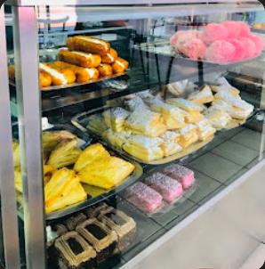
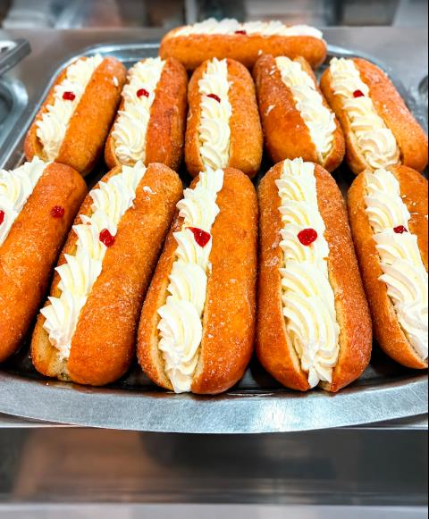
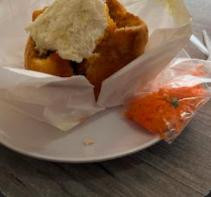
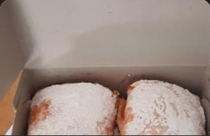

THE SWEET SIDE
A little treat
for the road.
For the quick pick-me-up, the shared box, or just because.
A neighbourhood bakery in Ferndale
A little something sweet, a savoury bite, or a treat for later. Make room for a bakery break at Top Hat.

A good place to start
Every bakery visit has its own little ritual. Come by, see what’s available, and find something that feels just right.

THE SWEET SIDE
For the quick pick-me-up, the shared box, or just because.

THE SAVOURY SIDE
When it’s time for a more filling bakery stop, ask what’s ready today.

TAKE A LITTLE HOME
Pop in at 2 Struik Street and see what catches your eye.
Selection changes. Call ahead to check what’s available today.
The simple pleasure of popping in
Top Hat Bakery is listed at 2 Struik Street in Ferndale. Stop by to browse, or call ahead to check today’s selection and hours.
Call 082 825 2048Just around the corner
Find Top Hat Bakery on Struik Street in Ferndale. Give the bakery a call for today’s hours or to check what’s fresh.
TOP HAT BAKERY
2 Struik Street
Ferndale, Randburg, 2194
Call to confirm today’s hours and availability.